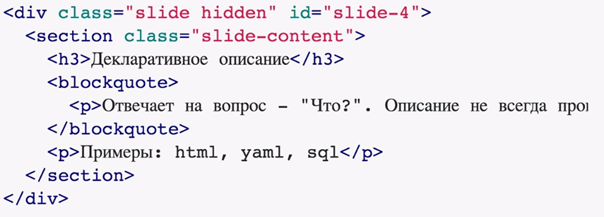
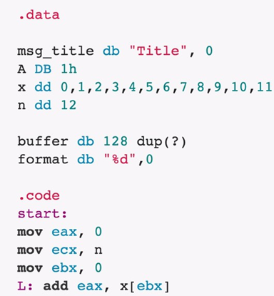
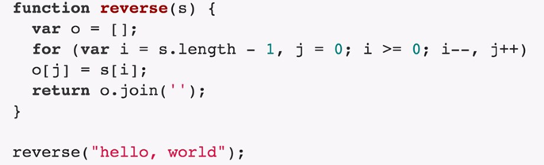
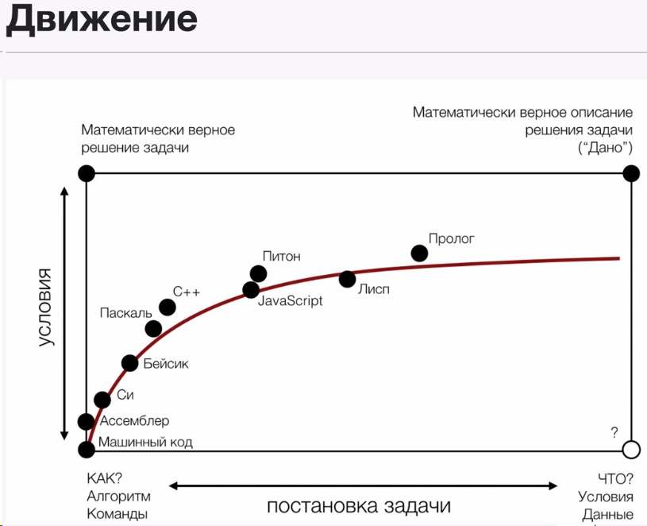
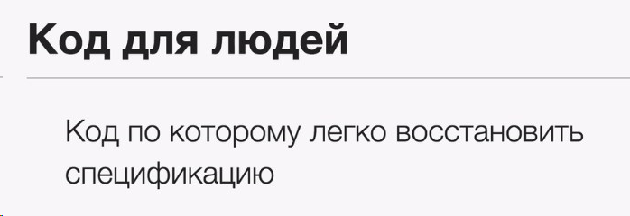

К чему нужно стремиться?
Программа - последовательность инструкций, определяющих процедуру решения конкретной задачи комптьютером.
Иделальная программа - спецификация, словесное опесание того, что должна делать программа.
Идеально - задать спецификацию и получить программу. К этому стремятся. Например - excel, пример успешного визуального программирования (функциональное).
Задача - не писать код, а решить задачу.
Декларативное описание
Спецификация - декларативное описание. Декларативное описание отвечает на вопрос "ЧТО".
Описание - не всегда программирование. Например, html, yaml, sql.

Пример описания слайда в html.
Что проиходит на самом деле при декларативном описании?
Код на ассеблере. Трудно понять, детали не ясны, слишком низкоуровый код.

Раньше только так и писали. Сейчас все стремятся к тому, что программы были как можно более декларативными.
Императивное описание
Отвечает на вопрос "КАК"
Пример - императивные языки программирования.
Ниже функция развертывания строки. Никакого дикларативного описания нет.

Предыдущий пример на ассеблере - пример императивного описания. Но в каждой инструкции невозможно разобрать цель.

В целом существует движение в языках программирования от более низкоуровневого к более высокоуровневым.
К тому же сами языки более склонны к императивной или декларативной парадигме.
При этом писать дикларативный код можно на любом языке.

Самая главная мысль - этого урока. Код в современном мире пишется для людей. Один из критериев определения хорошей программы - возможность по коду восстановить спецификацию.